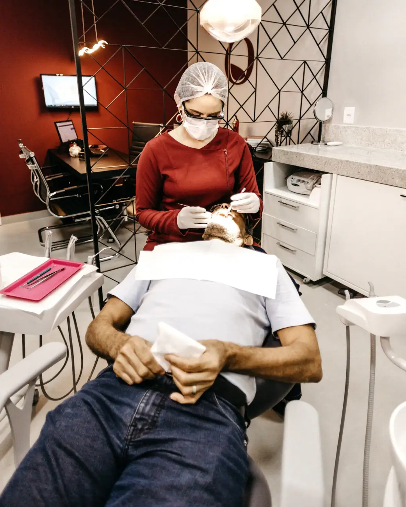
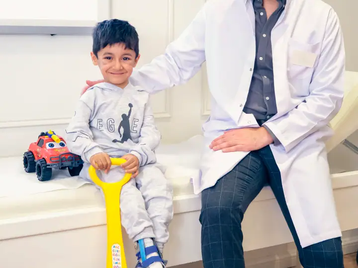
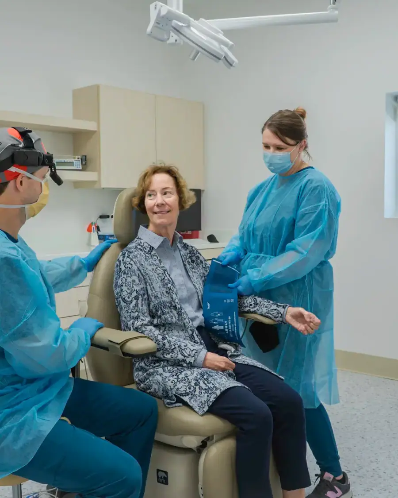

01
Avaliação e clínico geral
Consulta completa, limpeza, restaurações e prevenção. É por aqui que todo tratamento bem-feito começa.
Agendar avaliaçãoDentista no América · Joinville
Clínico geral, facetas, ortodontia, clareamento e atendimento infantil com uma equipe de dentistas que atende de segunda a sábado no América. Nota 5,0 com 149 avaliações no Google.

Segunda a sábado
Escolha o tratamento e fale direto com a equipe do Studio Bucal. A mensagem já vai pronta no WhatsApp.
Consulta completa, limpeza, restaurações e prevenção. É por aqui que todo tratamento bem-feito começa.
Agendar avaliação
Facetas em resina ou porcelana para corrigir cor, forma e tamanho dos dentes com resultado natural.
Agendar avaliação
Ortodontia para alinhar os dentes e corrigir a mordida, com manutenção e acompanhamento até o fim.
Agendar avaliação
Atendimento para crianças com paciência e carinho, para criar desde cedo uma boa relação com o dentista.
Agendar avaliação
Dentes mais claros com técnica indicada para o seu caso, depois de avaliar a saúde da gengiva e do esmalte.
Agendar avaliação
Restaurações da cor do dente para tratar cáries e desgastes sem que ninguém perceba.
Agendar avaliação
No Studio Bucal, a Dra. Larissa, a Dra. Helen e a equipe atendem crianças e adultos com carinho e pontualidade, de segunda a sábado.
Sem complicação: você conversa, entende o seu caso e só então decide.
Conte o que está sentindo ou o que quer melhorar no sorriso. A equipe responde e encontra o melhor horário para você.
O dentista examina, conversa com você e explica as opções de tratamento, com o plano e as etapas por escrito.
Você decide com calma e é acompanhado em cada sessão, até o resultado final.
Segunda a sábado: 08h–18h
Depoimentos reais de pacientes publicados no Google Maps.
“Uma das melhores experiências que tive na vida foi de estar, conhecer e fazer meu tratamento dentário aqui na Studio bucal. Lugar lindo, atendimento excepcional, desde as recepcionistas, auxiliares e profissionais. Indico um milhão de vezes.”
“Ótima clínica para chamar de sua. O atendimento desde a recepção é maravilhoso e todos os profissionais são extremamente cordiais, simpáticos e atenciosos. A sala de espera é super aconchegante com bebidas e comidinhas.”
“Não poderia deixar de dar o meu relato sobre a finalização do meu tratamento. A primeira impressão do Studio Bucal, já foi marcante! E ao longo do tratamento, mais impressionada fiquei. Tudo; recepção, as assistentes, os profissionais, tudo funciona com excelência!”
“Referência de excelência no sul do Brasil com o melhor nível de serviço já visto. E o segredo por trás deste sucesso todo está nas pessoas, régua sempre alta no que tange ao profissionalismo e atendimento nota mil. Parabéns Equipe Studio Bucal.”
“Vocês estão de parabéns, as meninas da recepção são uns amores, atenciosas, a Dra e sua assistente, acomodações, ambiente, enfim, tudo perfeito! Parabéns outra vez, me ganharam como cliente, pelo carinho e respeito que vcs tem pelo cliente!”
Não achou sua dúvida? Pergunte direto para a equipe no WhatsApp.
O Studio Bucal fica na R. Aquidaban, 984, América, em Joinville (SC), CEP 89216-295. Pelo botão "Traçar rota" nesta página você abre o caminho direto no Google Maps.
A clínica atende segunda a sábado, das 08h às 18h. Aos domingos fica fechada. O agendamento é feito pelo WhatsApp.
É só chamar no WhatsApp (47) 99971-4979 pelo botão "Agendar avaliação". A equipe responde, tira suas dúvidas e marca o melhor horário para a sua avaliação.
Avaliação e clínico geral, Facetas e lentes de contato, Aparelho ortodôntico, Odontopediatria, Clareamento dental e restaurações e estética. O tratamento indicado para você é definido na avaliação.
Para a maioria das pessoas, a cada seis meses, para limpeza e revisão. Assim os problemas são encontrados cedo, quando o tratamento é mais simples.
As duas cobrem a frente do dente para melhorar cor e formato. A lente de contato é uma faceta bem fina, normalmente de porcelana, que exige pouco ou nenhum desgaste. A faceta de resina é feita direto no consultório. Na avaliação o dentista indica a melhor opção.
Depende de cada caso, mas a maioria dos tratamentos leva entre um e três anos. Na avaliação o ortodontista mostra uma estimativa para o seu sorriso.
A primeira consulta é recomendada quando nasce o primeiro dente, ou até o primeiro ano de vida. Depois, o ideal é voltar a cada seis meses.
Agende sua avaliação no Studio Bucal em poucos minutos pelo WhatsApp.